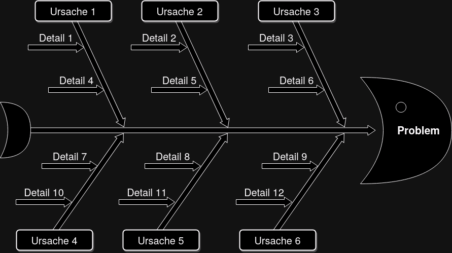
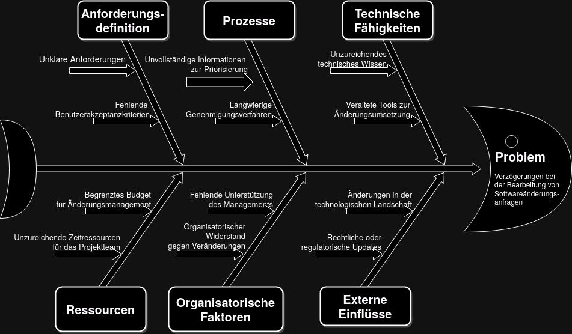
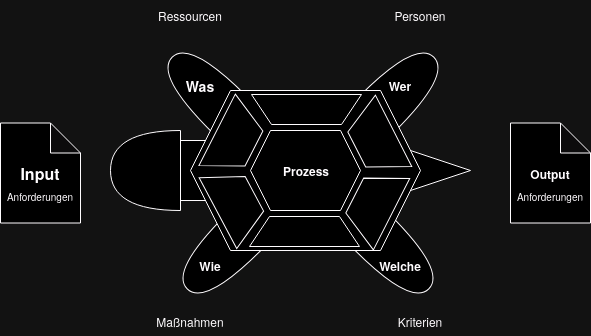
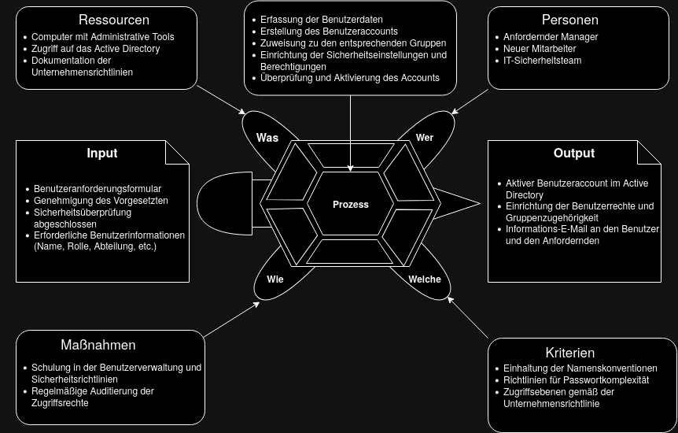
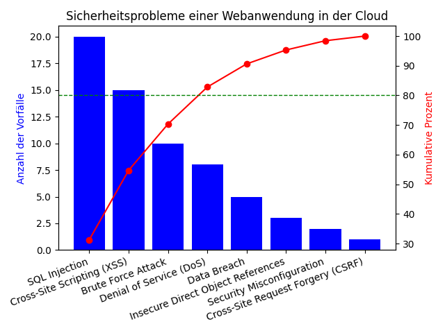

KOM-ITIL
Ein Ishikawa-Diagramm, auch bekannt als Fischgrätendiagramm oder Ursache-Wirkungs-Diagramm, ist ein Werkzeug zur Analyse von Ursachen und Wirkungen von Problemen oder Qualitätsabweichungen. Es visualisiert potenzielle Ursachen eines Problems in verschiedenen Kategorien.

Ursachen für Verzögerungen bei Softwareänderungen.

Ein Turtle-Diagramm, auch als Prozessbeschreibungsdiagramm bekannt, dient zur detaillierten Beschreibung eines Prozesses oder einer Funktion. Es visualisiert verschiedene Aspekte eines Prozesses, einschließlich Inputs, Outputs, Prozessschritte, Standards und Maßnahmen.

Anlegen eines neues Benutzers im Active Directory.

Ein Pareto-Chart ist ein Diagramm, das die relativen Häufigkeiten von Problemen oder Ursachen in absteigender Reihenfolge darstellt. Es basiert auf dem Pareto-Prinzip, das besagt, dass etwa 80% der Probleme durch 20% der Ursachen verursacht werden.
